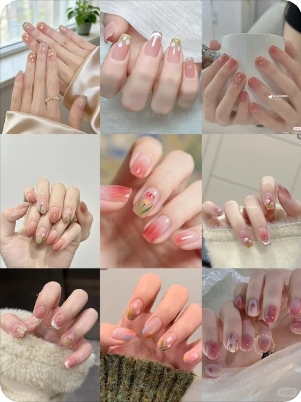
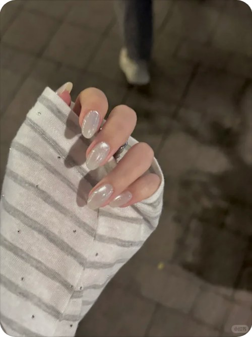
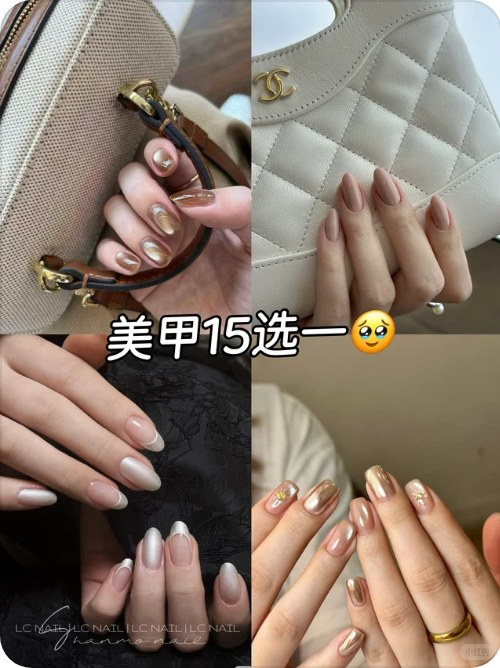

春分当前
3月20日 · 距今7天
万物复苏，换甲需求高峰
清明小长假即将
4月4日 · 距今22天
出游场景，清新户外风
五一黄金周预热
5月1日 · 距今49天
出行拍照，高峰换甲季
母亲节布局
5月11日 · 距今59天
亲子礼物场景
🌸 春分 · 2026年3月20日
今年春分垂类信号（共6条，按热度排序）
春夏醋酸透明甲
⏳ 数据积累中


春夏季节切换驱动换甲需求，醋酸质感与柠檬黄、白月光等清透色系形成视觉爆点
夏日气泡水甲
⏳ 数据积累中


「夏日美甲还得是海莉甲🐣」 2,665赞 · 「ins夏日｜🌸樱花气泡水指尖好嫩好清透🫧」 1,560赞
夏季节点临近，清透系与ins风夏日美甲内容自然爆发，海莉风与樱花气泡水双线带动
春日淡紫冰透甲
⏳ 数据积累中


淡紫色春日美甲单篇斩获24000赞，小清新色系与春季氛围契合，带动整体词热度冷启动
春日樱花透光甲
⏳ 数据积累中


🔬 KOL验证7looves
淡紫色与樱花极光风格笔记引爆互动，春季氛围感美甲需求集中爆发，短甲叠加小清新标签持续破圈
早春甲色趋势
⏳ 数据积累中


小红书早春甲色搜索标签活跃，笔记互动均值3000+，处于冷启动爬升阶段

数据采集说明：以下热点通过三路机制发现 ——
①搜索联想词扫描（"美甲"大词 + 20个垂类词联想词提取，识别新出现词汇）；
②热门榜单抓取（按互动量排序Top笔记，提取高频词汇）；
③KOL账号巡逻（头部美甲博主最新笔记监控，如男人相54万粉、雨祭Yujinails等）。
采集时间：2026-03-13 09:00
海莉甲 / 海莉醋酸甲
明星「海莉·比伯」湿润通透妆造出圈，美甲博主借势蹭热推醋酸感猫眼与婚甲内容，引爆仿妆搜索
38
热度指数
生命周期
萌芽期
爆发期
风格化期
沉淀期


数据证据（搜索联想词 + 热门榜单 + KOL巡逻）
「SIX SALON｜✨春夏海莉醋酸💅白月光」 · 3.0万赞
「水当当的猫眼蹭海莉哪能不爱呀 真的太！！🤩」 · 2.5万赞
「湿漉漉的海莉婚甲」 · 2.5万赞
「Nails Share | 海莉醋酸玫瑰金法式美甲」 · 1.1万赞
✅ KOL验证：梨子王木木🍐 今日笔记有此词
联想词 & 筛选标签
变体词
海莉醋酸甲 🔥最强变体
海莉猫眼甲
海莉婚甲
海莉玫瑰金法式甲
海莉白月光甲
湿漉漉海莉甲
猫眼海莉甲🔥最强变体
奶油白猫眼甲
清透猫眼甲
玻璃猫眼甲
爆闪猫眼甲
法式猫眼甲
猫眼甲 📎合并词
风格标签
醋酸通透感
湿润猫眼
玫瑰金法式
芭蕾奶油风
冰透婚甲
抢先布局婚甲+醋酸猫眼组合款，搭配#湿漉漉#白月光标题词，卡位婚季流量窗口期
法式甲 / 醋酸玫瑰金法式甲
海莉醋酸玫瑰金法式笔记多次高赞传播，叠加春夏柠檬黄花卉波点款助燃，法式经典款进入新风格迭代窗口
42
热度指数
生命周期
萌芽期
爆发期
风格化期
沉淀期


数据证据（搜索联想词 + 热门榜单 + KOL巡逻）
联想词 & 筛选标签
变体词
醋酸玫瑰金法式甲 🔥最强变体
海莉法式甲
柠檬黄法式甲
手绘花波点法式甲
甜心法式甲
春夏法式甲
风格标签
醋酸质感
玫瑰金色调
春夏甜系
手绘花卉
极简法式
主攻醋酸玫瑰金色系法式款式拍摄，结合7looves等KOL风格产出内容，抢占冷启动红利期流量
温柔甲 / 温柔醋酸甲
早春换季情绪驱动，「淡人」「富家千金」「多巴胺」等审美标签叠加，温柔系配色集体爆发
38
热度指数
生命周期
萌芽期
爆发期
风格化期
沉淀期


数据证据（搜索联想词 + 热门榜单 + KOL巡逻）
「清冷水光感醋酸 海莉月光温柔又气质美鼠啦」 · 7,124赞
「温柔到心巴的富家千金甲」 · 3,779赞
「元气多巴胺｜早春温柔黄色美甲合集」 · 3,286赞
「🎧ྀི♪ "春日醋酸晕染美甲🌷巨温柔巨仙气！」 · 3,213赞
「nails♩初春淡人多巴胺美甲🌼好嫩好温柔啊～」 · 2,975赞
联想词 & 筛选标签
变体词
温柔醋酸甲 🔥最强变体
温柔水光甲
温柔黄色甲
春日温柔甲
淡人温柔甲
千金温柔甲
风格标签
醋酸晕染
水光质感
奶油雾感
淡雅春色
千金气质
主推醋酸晕染+水光质感组合款，配色锁定奶黄/雾粉/月光白，抢占早春首发窗口期
紫色美甲 / 冷调紫美甲
春日氛围带动淡紫色审美爆发，「春日美甲」笔记单篇破2.4万赞引发跟风
32
热度指数
生命周期
萌芽期
爆发期
风格化期
沉淀期


数据证据（搜索联想词 + 热门榜单 + KOL巡逻）
「Nail share 淡紫色春日美甲⋆˚✿˖°」 · 2.4万赞
「555我又心动了~紫色美甲忒温柔了✨」 · 2,732赞
联想词 & 筛选标签
变体词
冷调紫美甲 🔥最强变体
冰透紫美甲
云雾紫美甲
人间富贵紫美甲
淡紫春日甲
鸳鸯紫甲
风格标签
冷调紫
气质感
冰透奶油
主攻「冷调紫+小短甲」组合内容，抢占萌芽期搜索流量，尽早布局春季专题笔记
淡淡美甲 / 冰透渐变甲
「美女味」审美标签走红，淡色系美甲凭借高颜值笔记在小红书引发冷启动传播
32
热度指数
生命周期
萌芽期
爆发期
风格化期
沉淀期


数据证据（搜索联想词 + 热门榜单 + KOL巡逻）
「new nail🫶🏻美女味很浓的淡淡美甲！」 · 4.3万赞
「nail ‧₊˚✨美女味很浓的一手」 · 2.1万赞
「nail ˚୨୧⋆🏝️｡冰透渐变薄荷绿 早春淡人天菜」 · 6,394赞
「ins nail share丨」 · 5,481赞
联想词 & 筛选标签
变体词
淡淡美甲🔥最强变体
冰透渐变甲
薄荷绿美甲
ins风美甲
裸色杏仁甲
早春淡人甲
风格标签
冰透裸色
淡雅高级
早春清冷
ins极简
抢占「美女味」「淡淡」视觉标签，发布冰透裸色/薄荷绿系列笔记，优先覆盖成都重庆等高搜索城市
春夏
✨ 时令 × 突发
✨ 时令 × 突发
「春夏」作为跨季节合成词，在小红书美甲内容中持续积累热度，以「SIX SALON春夏海莉醋酸」为代表的笔记获得极高互动，呼应清明出游与五一换甲双节点，搜索需求从早春自然延伸至初夏场景。
搜索词包
春夏美甲高优
春夏美甲款式推荐高优
春夏海莉美甲高优
春夏醋酸美甲中优
春夏流行美甲颜色中优
春夏短甲设计中优
2026春夏美甲趋势补充
春夏法式美甲补充
落地页款式召回
醋酸感/果冻质地，清透不厚重
奶白、裸粉、浅紫等春夏跨季显白色系
海莉甲/猫眼光感，适合日常到出游多场景
简约线条或渐变设计，拍照出片感强
短甲友好，换季轻盈感


供给摸排 （Mock 数据）
醋酸感/果冻质地，清透不厚重款SKU 42/需求50
奶白、裸粉、浅紫等春夏跨季显白色系款SKU 42/需求50
春天
🌸 时令热点
🌸 时令热点
「春天」是典型时令驱动热点，随3月下旬气温回升，小红书用户大量发布「指甲先过春天」系列内容，代表笔记互动量可观，反映用户以换甲迎接春季的强烈仪式感消费心理，清明小长假前将迎来搜索峰值。
搜索词包
春天美甲高优
春天美甲颜色推荐高优
春天换甲高优
春天适合做什么美甲中优
春天美甲ins风中优
春天花朵美甲中优
春天显白甲色补充
春天出游美甲补充
落地页款式召回
樱花粉、嫩绿、鹅黄等春日代表色
花卉手绘元素（郁金香、小雏菊）点缀
极光/晕染工艺呈现春日朦胧氛围感
适合清明出游拍照的清新田园风格
轻薄透亮质感，契合春季换新心理



供给摸排 （Mock 数据）
樱花粉、嫩绿、鹅黄等春日代表色款SKU 38/需求50
花卉手绘元素（郁金香、小雏菊）点缀款SKU 35/需求50
夏日
✨ 时令 × 突发
✨ 时令 × 突发
「夏日」属于时令预热与突发内容共振合成词，3月下旬即有用户以「夏日美甲还得是海莉甲」等前置内容布局初夏，结合五一黄金周出行拍照场景，用户提前搜索夏日风格美甲的需求正在快速形成，与清凉色系、海岛度假风高度绑定。
搜索词包
夏日美甲高优
夏日美甲款式高优
夏日海莉美甲高优
夏日清透美甲中优
夏日渐变美甲中优
夏日出游美甲中优
夏日显白甲色推荐补充
五一出游美甲夏日风补充
落地页款式召回
薄荷绿、冰蓝、柠檬黄等清凉高饱和夏日色
冰透/渐变工艺，呈现清凉水润质感
海岛度假风元素，五一出行场景适配
猫眼光感强反射，户外阳光下出片效果佳
波点、柠檬等夏日趣味图案增添活力感


供给摸排 （Mock 数据）
薄荷绿、冰蓝、柠檬黄等清凉高饱和夏日色款SKU 38/需求50
冰透/渐变工艺，呈现清凉水润质感款SKU 24/需求50
🚨 供给缺口
冰透/渐变工艺，呈现清凉水润质感款供给不足（48%），建议发起促产：补充至 50+ SKU
春日美甲
✨ 时令 × 突发
✨ 时令 × 突发
「春日美甲」是时令节气与美甲垂直场景的直接合成词，小红书上淡紫色春日美甲相关笔记获赞量可观，显示该词正处于春季换甲高峰的内容爆发期；结合清明小长假出游场景与五一换甲高峰的双重节点，搜索需求将持续攀升。
搜索词包
春日美甲高优
春日美甲款式推荐高优
2026春日美甲流行色高优
春日美甲清新风中优
春天美甲换新中优
春日温柔美甲中优
春日简约美甲补充
春日花朵美甲补充
落地页款式召回
淡紫/粉嫩/奶白等春季柔和色系
花朵/樱花/郁金香等植物手绘元素
简约法式或晕染渐变工艺
清透奶油质感光泽
短甲/杏仁甲等日常百搭甲形
供给摸排 （Mock 数据）
淡紫/粉嫩/奶白等春季柔和色系款SKU 43/需求50
花朵/樱花/郁金香等植物手绘元素款SKU 17/需求50
🚨 供给缺口
花朵/樱花/郁金香等植物手绘元素款供给不足（34%），建议发起促产：补充至 50+ SKU
春日
🌸 时令热点
🌸 时令热点
「春日」作为强季节性泛词，在小红书美甲内容中与淡紫色、清新风、温柔系等多个高赞笔记高度绑定，内容覆盖面广；清明出游与五一出行的双节点加持下，该词承接大量泛搜流量，是春季美甲引流的核心入口词。
搜索词包
春日美甲高优
春日nail高优
春日显白美甲高优
春日温柔风美甲中优
春日高级感美甲中优
春日出游美甲中优
春日渐变美甲补充
春日珍珠美甲补充
落地页款式召回
粉紫/嫩绿/奶白春日主色调
清透水光感或醋酸质感
郁金香/小花/波点等春季装饰元素
显白色号优先展示
适配出游拍照场景的精致甲型

供给摸排 （Mock 数据）
粉紫/嫩绿/奶白春日主色调款SKU 15/需求50
清透水光感或醋酸质感款SKU 37/需求50
🚨 供给缺口
粉紫/嫩绿/奶白春日主色调款供给不足（30%），建议发起促产：补充至 50+ SKU
早春
🌸 时令热点
🌸 时令热点
「早春」是春季换甲需求的前置抢跑词，小红书上「早春版白女美甲」等笔记已积累较高互动，说明用户在春季正式到来前就开始搜索换甲灵感；该词与奶油猫眼、白月光等低饱和高质感风格深度绑定，对应追求精致提前布局的核心美甲用户群。
搜索词包
早春美甲高优
早春美甲2026高优
早春美甲流行色高优
早春奶油美甲中优
早春猫眼美甲中优
早春白女美甲中优
早春清透美甲补充
早春换甲推荐补充
落地页款式召回
奶白/米白/裸粉等早春低饱和色
猫眼光效或珍珠光泽工艺
简洁高级感造型无多余装饰
水光清透奶油质感
圆形短甲或微方甲等自然甲形


供给摸排 （Mock 数据）
奶白/米白/裸粉等早春低饱和色款SKU 15/需求50
猫眼光效或珍珠光泽工艺款SKU 37/需求50
🚨 供给缺口
奶白/米白/裸粉等早春低饱和色款供给不足（30%），建议发起促产：补充至 50+ SKU
早春美甲
✨ 时令 × 突发
✨ 时令 × 突发
由「早春」与「美甲」两个高频共现词合成，春日换甲季节节点临近清明小长假，用户对早春风格美甲的搜索意图持续积累，笔记互动量呈稳步上升态势，是典型的季节驱动型合成热词。
搜索词包
早春美甲2026高优
早春美甲款式推荐高优
早春美甲颜色高优
早春奶油猫眼美甲中优
早春简约美甲中优
清明出游美甲补充
春日换甲补充
落地页款式召回
奶油色系/粉白嫩色调
猫眼/珍珠光泽质感
短甲/方圆形甲型
极光/晕染春日元素
清新简约无过度装饰
供给摸排 （Mock 数据）
奶油色系/粉白嫩色调款SKU 25/需求50
猫眼/珍珠光泽质感款SKU 11/需求50
🚨 供给缺口
奶油色系/粉白嫩色调款供给不足（50%），建议发起促产：补充至 50+ SKU
纯色
🌸 时令热点
🌸 时令热点
纯色美甲是小红书美甲赛道长青基础词，代表笔记获赞量可观，印证了用户对「简约高级感」的持续偏好；叠加春夏换季场景，纯色款式因百搭显白特性在当季流量中持续放量。
搜索词包
纯色美甲推荐高优
纯色美甲显白高优
春夏纯色美甲高优
纯色短甲中优
纯色奶油美甲中优
纯色美甲颜色搭配补充
纯色高级感美甲补充
落地页款式召回
单色全涂/无多余装饰
显白色系（白、裸、奶油、浅粉）
哑光或微光泽质感
短甲/椭圆形甲型
高级感简约风格


供给摸排 （Mock 数据）
单色全涂/无多余装饰款SKU 12/需求50
显白色系（白、裸、奶油、浅粉）款SKU 30/需求50
🚨 供给缺口
单色全涂/无多余装饰款供给不足（24%），建议发起促产：补充至 50+ SKU
海莉
⚡ 突发热点
⚡ 突发热点
「海莉」为当前小红书美甲圈现象级风格词，多篇相关笔记互动量突破万赞甚至数万赞级别，热度显著高于同期其他风格词，呈现出明显的爆发式传播特征，已带动「醋酸」「猫眼」「清透」等关联词协同增长。
搜索词包
海莉美甲高优
海莉醋酸美甲高优
海莉猫眼美甲高优
海莉风格美甲2026中优
海莉月光美甲中优
海莉白月美甲中优
清透海莉风美甲补充
落地页款式召回
醋酸/水光透明感质感
猫眼光晕效果
冷白/月光/浅玫瑰色调
清透高饱和度光泽
气质感/冷淡高级风格


供给摸排 （Mock 数据）
醋酸/水光透明感质感款SKU 21/需求50
猫眼光晕效果款SKU 39/需求50
🚨 供给缺口
醋酸/水光透明感质感款供给不足（42%），建议发起促产：补充至 50+ SKU
✕